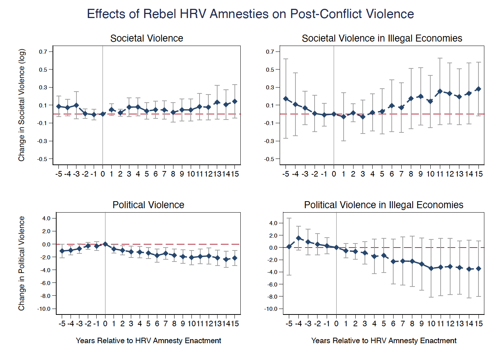
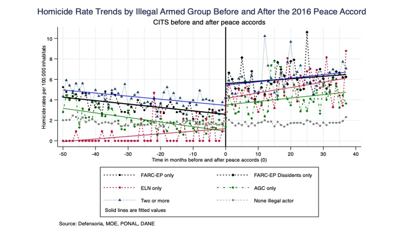
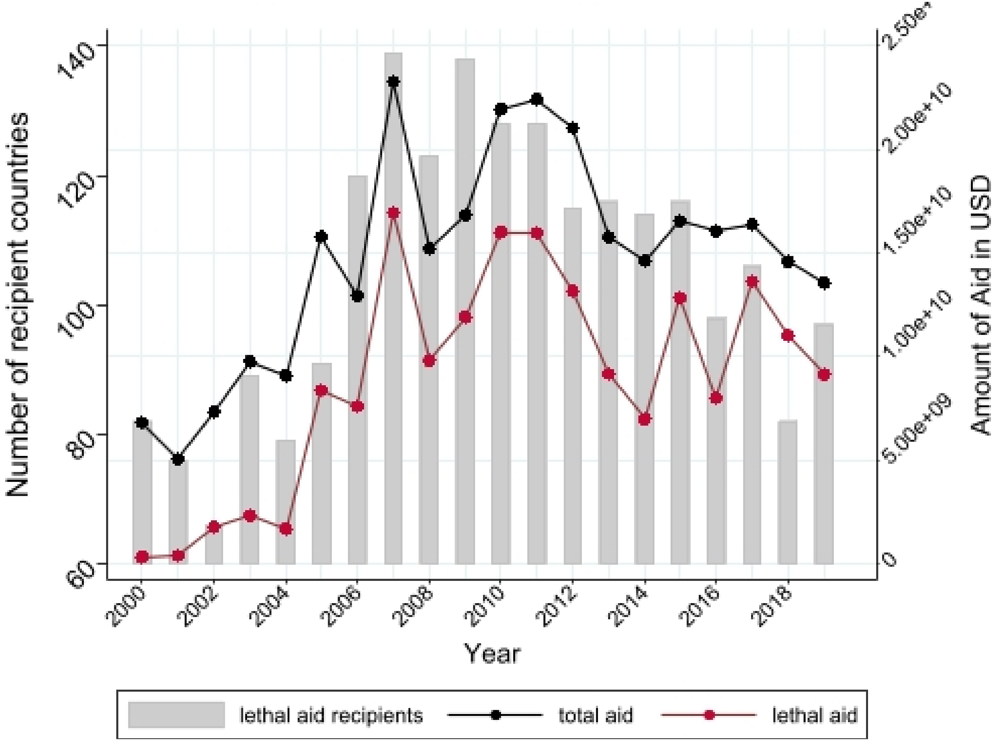
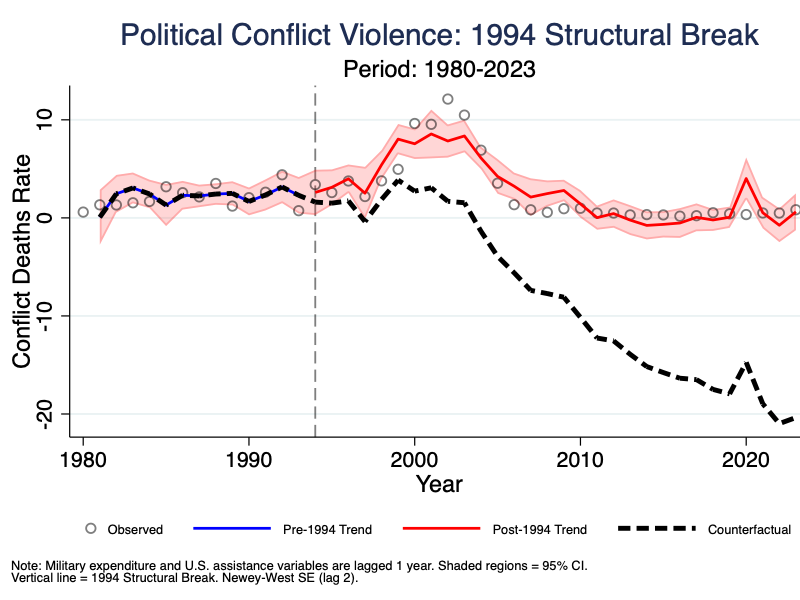
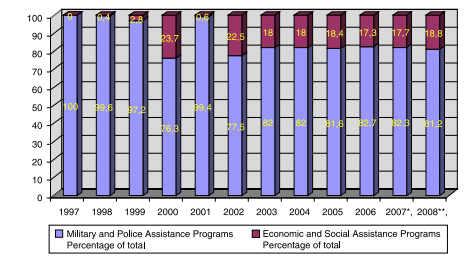

Research
My research examines transitional justice, post-conflict violence, and peace processes in comparative perspective, with regional expertise in Latin America. I employ rigorous mixed methods combining quantitative causal inference—difference-in-differences (with staggered treatment designs), comparative interrupted time series analysis, and panel methods—with qualitative process tracing from extensive fieldwork to evaluate how policies affect violence patterns and vulnerable populations.
The Price of Elite Peace: A Dual-Arena Theory of Post-Conflict Violence
Ph.D. DissertationUniversity of North Carolina at Chapel Hill (2026)
This dissertation addresses the critical gap between elite peace and community security, exploring how peace interventions interact with armed actor incentives to redistribute violence between political and societal domains. Developing a "Dual-Arena" framework, the research argues that the institutional design of peace policies determines whether violence is reduced, transformed, or displaced. The dissertation comprises three interconnected essays: a cross-national analysis demonstrating how amnesties covering human rights violations pacify elites while endangering communities; a national-level study of Colombia (1980–2023) examining how state strategies interact with hybrid armed groups; and a subnational investigation revealing how consent-based counternarcotics policies inadvertently incentivize "economic spoilers" to escalate local violence. Collectively, these studies challenge single-outcome evaluation frameworks, demonstrating that elite pacification often comes at the hidden cost of everyday community security.

The Economic Spoiler's Incentive: How Consent-Based Counternarcotics Policy Fueled Violence in Post-Conflict Colombia
PublishedStudies in Conflict & Terrorism, 2025
This study introduces and analyzes the concept of the “economic spoiler”—armed actors motivated to preserve illicit economies—to explain how developmental peace policies can fail. Focusing on Colombia’s post-2016 shift to a consent-based counternarcotics program (PNIS), the paper argues that this ‘soft’ policy created a strategic incentive for the Revolutionary Armed Forces of Colombia (FARC) dissidents, acting as economic spoilers, to use targeted violence. They sought to sabotage the state’s program and coerce farmers back into the coca economy. Using comparative interrupted time series analysis, quantitative analysis shows homicides increased most severely where the PNIS made civilians vulnerable targets, providing a novel, actor-centric explanation for post-accord violence.

Building Partner Capacity: US Aid to Security Sector Actors
PublishedJournal of Conflict Resolution (JCR), 2025
This article introduces the US Aid to Security Sector Actors (USASSA) dataset, the product of a collaboration between academic researchers and the nonprofit Security Assistance Monitor. In addition to providing the most comprehensive source of data on US security assistance, the USASSA dataset transforms detailed information about how security assistance funds are spent into aid and recipient typologies that can be used to conduct more sophisticated analyses of how this foreign policy tool is employed, its utility, and its limitations. Our data clearly show not only the magnitude and geographic reach of US security assistance, but also its diversity. While some security assistance is akin to humanitarian aid, other types of assistance blur the line between foreign aid and proxy warfare. We demonstrate the utility of the dataset with an exploration of whether the effects of US security assistance on human rights violations and domestic terrorism vary across types of aid.

Dual Arenas of Violence: Elite Bargaining, Local Insecurity, and the Conditions for Comprehensive Peace in Ongoing Civil Wars
Working PaperManuscript in Progress
Why does violence often transform rather than terminate following state interventions? I argue this puzzle stems from neglecting the organizational context of violence. My “dual arenas” framework contends that state strategies—accommodation versus coercion—produce different outcomes depending on whether political and societal violence operate through separate actors (separation) or are fused within hybrid armed groups (entanglement). Neither strategy eliminates violence; both redistribute it between arenas. I test this using Interrupted Time Series analysis on Colombia (1980–2021), which offers variation across all four strategy-context combinations: coercion under separation (1980–1982), accommodation under separation (1983–1992), accommodation under entanglement (1993–2001), and coercion under entanglement (2002–2021). Results show that each policy transition transformed violence trajectories: the 1983 shift to accommodation reduced political violence while societal violence rose; the 1993 shift to entanglement reversed this pattern as political violence accelerated while societal violence declined through market consolidation; and post-2002 coercion reduced political violence but—contrary to the hydra effect prediction—societal violence continued declining. These findings demonstrate that organizational context critically moderates strategy effectiveness, explaining why successful interventions may transform rather than eliminate violence.

Rediscovering Europe? The aid dilemmas during and after the Plan Colombia
PublishedConflict, Security & Development (CSD), 2008
This paper discusses a complex process of aid oriented towards taming the Colombian conflict. We show that, despite the grand declarations provided generously by all actors involved, there has been much strategic manoeuvring and inconsistency. We describe how Colombian decision makers made a transition from the intent of establishing peace as a nationalist programme to the effort of internationalising war. However, the transition interacted with—and was somewhat dampened by—the set of constraints they faced. A very important part of these constraints was related to the choice, when seeking key international partners, between the United States and Europe. Donors, at the same time, had their own objectives and constraints, and frequently promoted lines of action that were at odds with their stated objectives. At the same time, the analysis suggests that despite—and sometimes even because of—these limits some windows of opportunity for positive developments have been opened.
